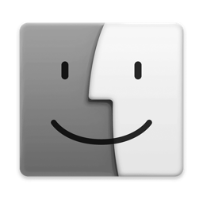

Apple · 1992
System 7.1 (1992) was the Mac as most people met it in the early nineties: the desktop of 1984 grown up — aliases, a real multitasking Finder, TrueType, drag and drop between programs — and on a compact Mac or a PowerBook still in one bit: black, white and dithering. This theme keeps that screen and adds the desk furniture of the PowerBook years, drawn the same way: the Control Strip along the bottom edge (resolution, sound, printer, network, battery, all in black and white), the Application menu at the right end of the menu bar to switch programs, and the Apple menu of the day. There is no dock; programs come from the Finder and the menus.
Everything works the way it does under Mac OS 9 (authentic) — the strip rolls in under its tab, modules rearrange with Option-drag, a click on the speaker stands up the slider — only that every menu, picture and control has been put through a 1-bit screen.